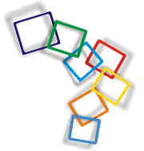
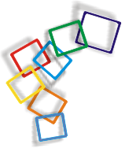

"...fierA di esserCI"
Esplode la festa
giorno importante
per chi nella vita
ha detto il suo Si.
Riflessi nel volto
la gioia e l'incontro
di età e di paesi
diversi e lontani
eppure già uniti
dal Dio dell'amore.
Si innalza sublime
nel dialogo la profezia
di voci dipinte
di anime sognanti.
Volto pensante
di chi cerca la quiete
incrocia quei bimbi
festanti innocenti.
Portando le tegole
nei gruppi compongono
camere e vani
e la Casa Comune
si erge nel centro.
Tra musiche e danze
diffondono sorrisi
e Testimoni del Risorto
siamo Fieri di Esserci.
Volgendo la festa
al suo dolce declino
a Dio si elevano
canti e preghiere
sicuri che amare
ed essere liberi
è cercare e trovare
negli occhi dell'altro
la Sua Sola Presenza
sicuri che vivere
è sapere e affidarsi
nel totale abbandono
alle Sue Braccia di Padre.
Antonella Ambruso
S.Maria Greca (Corato)

